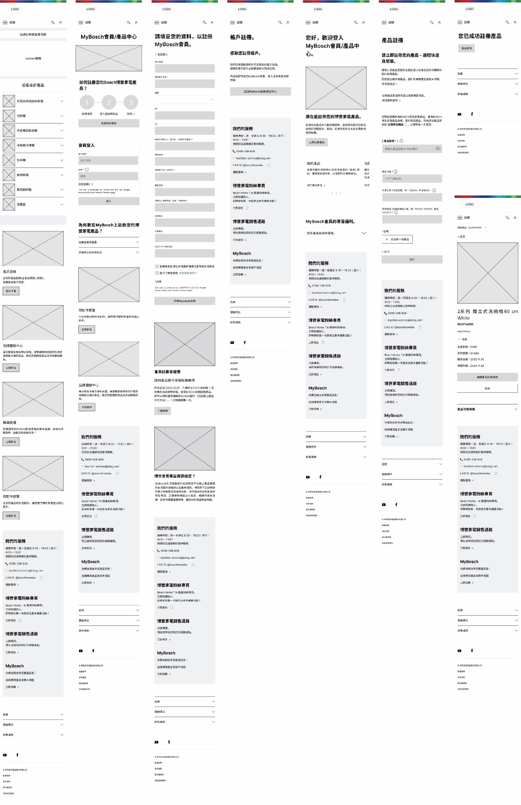
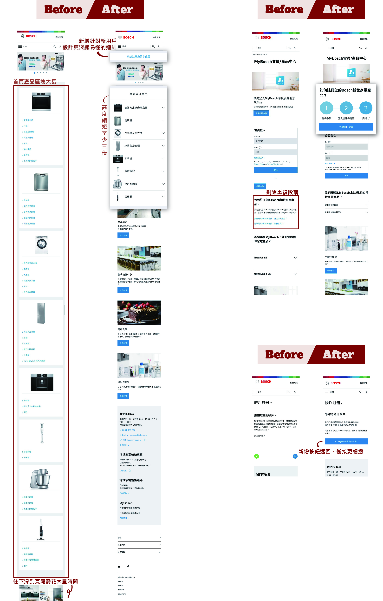

雖然是國際知名老牌企業，但在台灣官網新推出之產品註冊流程，手機頁面 UX 較不直覺、資訊較不明確， 使第一次進入網頁的新手容易迷失在茫茫資訊中。
-
改善目的
-
讓第一次進入網頁的顧客，可以快速了解並完成註冊商品
-
風格
-
考慮到品牌專業形象與其固有使用者，在設計時以不違背原設計色彩計畫及風格為主，並對內容不進行太大或太具創新性的更動
【釐清流程】
Flow Chart
繪製註冊產品的流程圖，發現註冊產品流程問題不大。
主要問題應在於初始資訊不明確、流程之間銜接不夠細緻。
User Journey
透過 User Journey，更加清楚修改方向：
- 簡化手機版首頁產品介紹
- 減少較不必要之文字敘述，或將與流程較無關之文字下移
- 增加簡易註冊流程說明，降低使用者徬徨感
- 增加連接各流程頁面之按鈕，讓使用者不需要自己回頭尋找頁面
【Figma 線框與擬真】
對比示意
Prototype 效果
Wrap Up 小結
想了解更多的話...
- 點擊連結進入 Figma： Redesign - Bosch
- "返回首頁" 觀看其他案例
這次 Redesign 的 Primary Button 和 Primary Color 等都沿用原設計，讓重新設計後的成果看起來不會太突兀。
在維持原品牌形象下，透過增加簡易流程圖、新增銜接各頁面之按鈕等，使整體註冊流程使用更順暢。
並用簡單的 Accordion 開合效果，讓手機版首頁原本繁雜的版面更為精簡，提升手機使用者使用體驗。